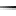
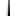
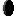
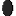
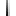

背景色：
デフォルト
白
灰色
黒
赤(薄い)
赤
赤(暗い)
緑(薄い)
緑
緑(暗い)
青(薄い)
青
青(暗い)
黄(薄い)
黄
黄(暗い)
紫(薄い)
紫
紫(暗い)
水(薄い)
水
水(暗い)
分類
(フォルダ)
画像
回転
(img_turn)

   
上下回転
s_ssk.gif
上下回転(白白黒)
s_sk.gif
上下回転(白黒)
s_skk.gif
上下回転(白黒黒)
s_kks.gif
上下回転(黒黒白)
s_ks.gif
上下回転(黒白)
s_kss.gif
上下回転(黒白白)
上下回転
l_ssk.gif
左右回転(白白黒)
l_sk.gif
左右回転(白黒)
l_skk.gif
左右回転(白黒黒)
l_kks.gif
左右回転(黒黒白)
l_ks.gif
左右回転(黒白)
l_kss.gif
左右回転(黒白白)
右上回転
u_ssk.gif
右上回転(白白黒)
u_sk.gif
右上回転(白黒)
u_skk.gif
右上回転(白黒黒)
u_kks.gif
右上回転(黒黒白)
u_ks.gif
右上回転(黒白)
u_kss.gif
右上回転(黒白白)
右下回転
d_ssk.gif
右下回転(白白黒)
d_sk.gif
右下回転(白黒)
d_skk.gif
右下回転(白黒黒)
d_kks.gif
右下回転(黒黒白)
d_ks.gif
右下回転(黒白)
d_kss.gif
右下回転(黒白白)
By
Shiroma
1BIT NAVIGATION
/
白魔空間